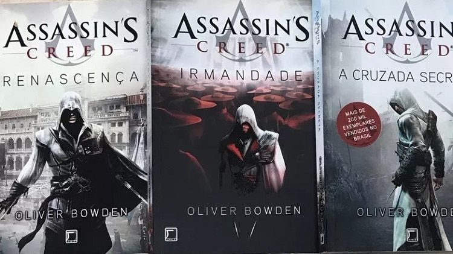

-
Assasin's Creed: Renascença
2011
-
Assasin's Creed: A Cruzada Secreta
2012
-
Assasin's Creed: A Irmandade
2012
Livros:
A série de livros Assassin's Creed, de Anton Gill e Andrew Holmes (ambos sob o pseudônimo Oliver Bowden), Christie Golden, Matthew Kirby e Gordon Doherty é uma coleção de romances ambientados no universo dos videogames Assassin's Creed. Os livros se passam em vários períodos de tempo e como os jogos, giram em torno da guerra secreta travada por séculos entre a Irmandade dos Assassinos e a Ordem dos Templários. A maioria dos romances são adaptações diretas dos jogos, com vários elementos adicionados ou ligeiramente modificados.